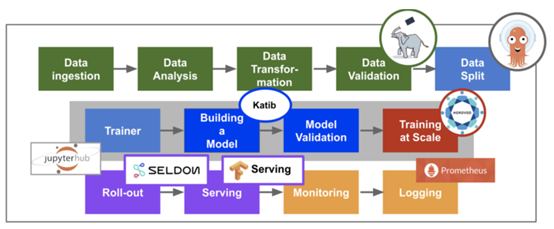
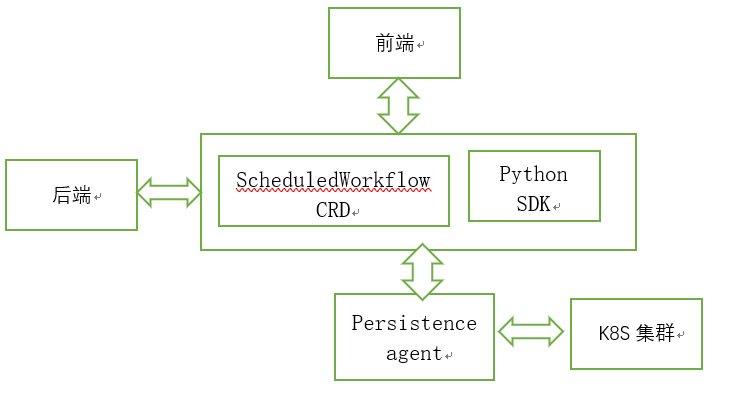

kubeflow简介
前面都是在介绍如何安装Kubeflow和pipelines，今天补一下Kubeflow的pipelines的知识，让大家知道他们是什么，能做什么。
背景
Kubernetes 本来是一个用来管理无状态应用的容器平台，但是在近两年，有越来越多的公司用它来运行各种各样的工作负载，尤其是机器学习炼丹。各种 AI 公司或者互联网公司的 AI 部门都会尝试在 Kubernetes 上运行 TensorFlow，Caffe，MXNet 等等分布式学习的任务，这为 Kubernetes 带来了新的挑战。
首先，分布式的机器学习任务一般会涉及参数服务器（以下称为 PS）和工作节点（以下成为 worker）两种不同的工作类型。而且不同领域的学习任务对 PS 和 worker 有不同的需求，这体现在 Kubernetes 中就是配置难的问题。以 TensorFlow 为例，TensorFlow 的分布式学习任务通常会启动多个 PS 和多个 worker，而且在 TensorFlow 提供的最佳实践中，每个 worker 和 PS 要求传入不同的命令行参数。
其次，Kubernetes 默认的调度器对于机器学习任务的调度并不友好。如果说之前的问题只是在应用与部署阶段比较麻烦，那调度引发的资源利用率低，或者机器学习任务效率下降的问题，就格外值得关注。机器学习任务对于计算和网络的要求相对较高，一般而言所有的 worker 都会使用 GPU 进行训练，而且为了能够得到一个较好的网络支持，尽可能地同一个机器学习任务的 PS 和 worker 放在同一台机器或者网络较好的相邻机器上会降低训练所需的时间。
针对这些问题，Kubeflow 项目应运而生，它以 TensorFlow 作为第一个支持的框架，在 Kubernetes 上定义了一个新的资源类型：TFJob，即 TensorFlow Job 的缩写。通过这样一个资源类型，使用 TensorFlow 进行机器学习训练的工程师们不再需要编写繁杂的配置，只需要按照他们对业务的理解，确定 PS 与 worker 的个数以及数据与日志的输入输出，就可以进行一次训练任务。
一句话总结就是：kubeflow是一个为 Kubernetes 构建的可组合，便携式，可扩展的机器学习技术栈。
kubeflow核心组件简介
kubeflow是一个胶水项目，它把诸多对机器学习的支持，比如模型训练，超参数训练，模型部署等进行组合并已容器化的方式进行部署，提供整个流程各个系统的高可用及方便的进行扩展部署了 kubeflow的用户就可以利用它进行不同的机器学习任务。

上面这个图体现了工业上机器学习的整体流程，从数据采集，验证，到模型训练再到服务发布等。而图中的每一个小组件都是Kubeflow中包含的。可见，kubeflow的野心之大，同时另一方面也表达了它的功能之强。 下面简单介绍一下其他的组件。想要更详细的了解某个组件，可以在去官网查看。
2.1 jupyter
jupyter 创建和管理多用户交互式Jupyter notebooks。
2.2 seldon
Seldon 提供在Kubernetes上对机器学习模型的部署
2.3 TF-Serving
TF-Serving 提供对Tensorflow模型的在线部署，支持版本控制及无需停止线上服务，切换模型等功能
2.4 Ambassador
Ambassador 对外提供统一服务的网关(API Gateway)，它是一个 Kubernetes 原生的微服务 API 网关，它部署在网络边缘，将传入网络的流量路由到相应的内部服务（也被称为“南北”流量）。
2.5 Istio
Istio 提供微服务的管理，Telemetry收集
2.6 Ksonnet
Ksonnet Kubeflow使用ksonnet来向kubernetes集群部署需要的k8s资源
2.7 Pachyderm
Pachyderm版本控制数据，类似于Git对代码的处理。 您可以跟踪一段时间内的数据状态，对历史数据进行回溯测试，与队友共享数据，以及恢复到以前的数据状态。
2.8 Argo
Argo是一个开源的基于容器的工作流引擎，并实现为一个K8S的CRD(CustomResourceDefinition)。
2.9 pipelines
pipelines是 Kubeflow 社区新近开源的端到端的 ML/DL 工作流系统。实现了一个工作流模型。所谓工作流，或者称之为流水线（pipeline），可以将其当做一个有向无环图（DAG）。其中的每一个节点，在 kubeflow/pipelines 的语义下被称作组件（component）。组件在图中作为一个节点，其会处理真正的逻辑，比如预处理，数据清洗，模型训练等等。每一个组件负责的功能不同，但有一个共同点，即组件都是以 Docker 镜像的方式被打包，以容器的方式被运行的。
2.10 Katib
Katib是一个超参数训练系统。它是对 Google Vizier 的开源实现，Google Vizier 是 Google 内部的机器学习超参数训练系统的一个子系统。
2.11支持的机器学习引擎
PyTorch,MXnet,TF。TF为当前主要支持的机器学习引擎
全部组件：https://www.kubeflow.org/docs/guides/components/components/
3 pipelines组件介绍
3.1 Pipelines设计时的目标：
（1）端到端编排：启用和简化端到端机器学习管道的编排
（2）简单的实验：让您轻松尝试各种想法和技术，并管理您的各种试验/实验。
（3）易于重复使用：使您能够重复使用组件和管道，快速拼凑端到端解决方案，而无需每次都重新构建。
3.2 pipelines的组成部分
pipelines整个的架构可以分为五个部分，分别是:
（1）ScheduledWorkflow CRD以及其 operator
（2） 流水线前端
（3） 流水线后端
（4）Python SDK
（5）persistence agent
ScheduledWorkflow CRD 扩展了 argoproj/argo 的 Workflow 定义，这也是流水线项目中的核心部分，它负责真正地在 Kubernetes 上按照拓扑序创建出对应的容器完成流水线的逻辑。
Python SDK 负责构造出流水线，并且根据流水线构造出 ScheduledWorkflow 的 YAML 定义，随后将其作为参数传递给流水线系统的后端服务。
后端服务依赖关系存储数据库（如 MySQL）和对象存储（如 Amazon S3），处理所有流水线中的 CRUD 请求。
前端负责可视化整个流水线的过程，以及获取日志，发起新的运行等
Persistence agent 负责把数据从 Kubernetes Master 的 etcd 中 sync 到后端服务的关系型数据库中，其实现的方式与 CRD operator 类似，通过 informer 来监听 Kubernetes apiserver 对应资源实现。
pipelines的结构图如下所示：

3.3 piplelines中的概念
https://www.kubeflow.org/docs/guides/pipelines/pipelines-concepts/
3.4 pipelines示例
https://www.kubeflow.org/docs/guides/pipelines/pipelines-overview/
3.5 运行pipelines步骤
1) 定义一个Experiment（具体pipeline的运行需要一个Experiment）
2) 定义一个pipeline
3) 执行该pipeline
参考：